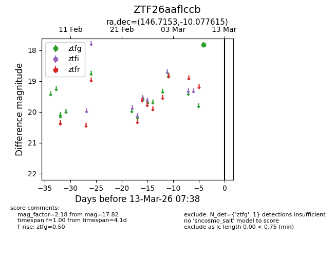
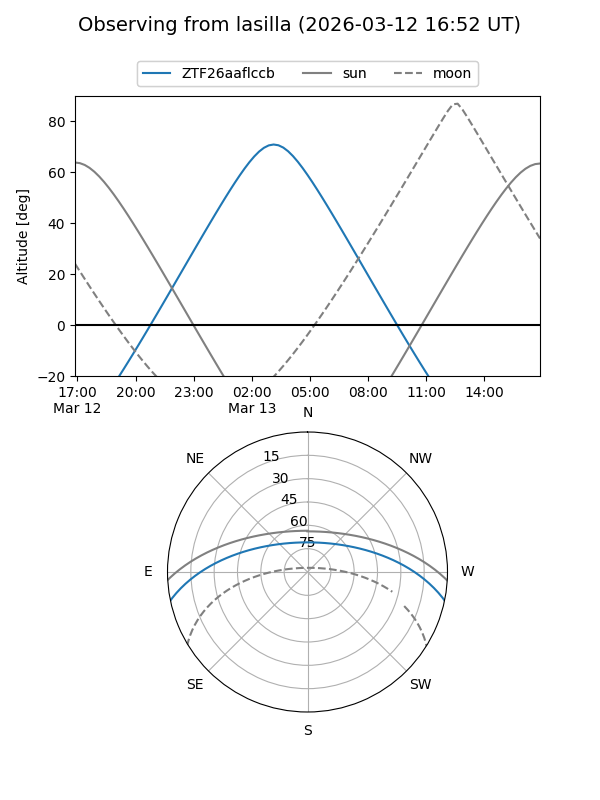
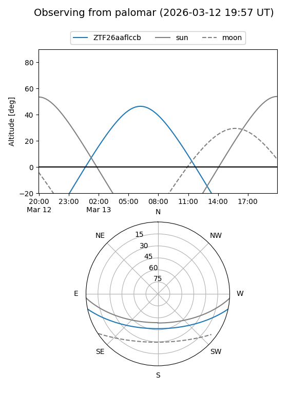

ZTF26aaflccb
Target ZTF26aaflccb at 2026-03-13 07:39
Aliases and brokers:
FINK: link
Lasair: link
ALeRCE: link
alt names
ZTF26aaflccb (ztf,fink_ztf)
Coordinates:
equatorial (ra, dec) = 146.7153,-10.07761
equatorial (HMS+DMS) = 09:46:51.68,-10:04:39.41
galactic (l, b) = (246.2560,+31.82473)
Flags:
Photometry:
last ztfg=17.82
1 ztfg detections
Lightcurve

Visibility


Additional plots